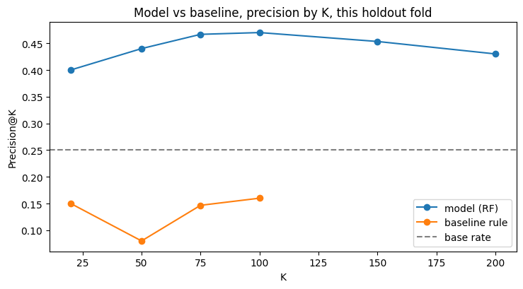
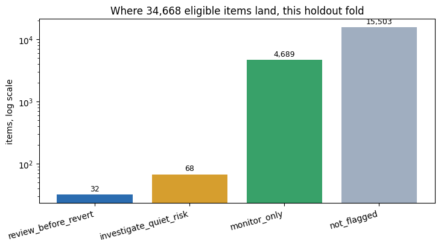

The question, and the decision it supports
FlyRank publishes content into client websites at scale, then watches search performance and decides what to fix. Today that triage runs on hand-written flags, a health score and quick-win tags, thresholds a person chose by hand. They work, and they run in production. This project asks a narrower question: on the specific problem of declining pages, does a trained model beat that fixed rule, and by how much can we actually trust the answer?
The decision this supports is simple to state and hard to do well: out of thousands of pages, which one does a human look at first? Get it wrong and either nothing gets reviewed until the drop is already old news, or a reviewer's limited time goes to pages that were never really at risk.
Two framing choices, made early and held throughout:
- The label is client-relative, not global. Decline rates range 0%–93.7% across clients in this dataset, so a single fixed "% drop = decline" cutoff would flag almost every page for an already-struggling client and almost none for a thriving one. A page is labeled declining when its trend falls meaningfully below that client's own median trend, not below a universal number.
- This predicts decline, not describes it. FlyRank's existing flags score a page's current state. This model is asked to anticipate a page's near-future state from data that predates the outcome — a genuinely harder, and genuinely different, problem.
Data
Every number in this paper comes from FlyRank's public-safe internship warehouse on Hugging Face, gated behind a free read token, pseudonymized before release, never a live client feed.
FlyRank/internship-warehouse — fact_content_daily_performance (daily grain: one row per content item × client × report date) joined to dim_content for static attributes. This analysis spans March 1 – June 30, 2026: March+April as the feature window, May→June as the label window.
- Mutable snapshot fields (
last_optimized_date,optimization_eligible_date,is_deleted,is_published):dim_contentis a single export-time snapshot, not a per-day history, so these fields don't mean what they'd look like they mean at any givenreport_date. - Undocumented columns (
provider_used,model_used,backlinks,category_count) — excluded on the same rule as everything else in this project: no documentation, no feature. - Product flags (health score and similar) are outputs of decisions FlyRank's product already made, not raw observations. Used only as the thing being compared against, never as a model input.
- Low-evidence pages — items missing GSC data in any of the four months, under a 50-impression May floor, or belonging to a client with fewer than 20 eligible items, are excluded from the eligible population entirely, not defaulted to "not declining."
GSC data is present for ~36.7% of raw rows; GA4 for only ~4–5.5%. GA4-based features are real evidence for a thin slice of the panel, never treated as a co-equal signal to GSC-derived ones.
Public safety: client_hash_id and content_hash_id are one-way pseudonymous hashes — used only for grouping, labeling, and validation splits, never fed to any model as a feature. No client name, domain, or raw query appears anywhere in this analysis.
Methodology
Twelve features, one pooled model, a rule built first as a fair comparison point, and a validation design chosen specifically because the naive one is dishonest here.
Label
relative_gap = a page's May→June impression trend, minus that client's own median trend over the same window. A page is declining when its relative_gap falls below the 25th-percentile break of this exact population's own distribution (−20.82, re-derived fresh on every population checked, never copied from an earlier run). Base rate: 0.250.
Features (12)
| Feature | Window | What it is |
|---|---|---|
| impr_feat, clicks_feat | Mar+Apr | Raw GSC impressions / clicks |
| pos_feat | Mar+Apr | Impression-weighted average position |
| ctr_feat | Mar+Apr | clicks_feat / impr_feat |
| ga4_engaged_feat, has_ga4_feat | Mar+Apr | GA4 engaged sessions, gated by availability flag |
| content_type (×4 dummies) | static | Content type, one-hot encoded |
| within_window_trend | Mar → Apr | Early-warning signal: is the page already sliding before the label window even starts |
| feat_client_share | Mar+Apr | This page's share of its own client's feature-window traffic |
The last two earned their place through testing, not by default: see interpretation below. A client-relative version of pos_feat was tried once and made every metric worse; it was dropped.
Baseline
A transparent rule, built first, on observational signals only, no decline label anywhere near it: (expected CTR for this position tier − actual CTR), floored at zero, × the page's share of its own client's June traffic. Fires on the top quartile of that score. Two candidate signals were tested and rejected before landing here: staleness (survivorship bias: content earning real traffic right now is almost never the stale stuff) and a naive "any positive CTR gap" cut (true for 60% of the population — not a flag, almost everyone).
Validation design, and why it isn't optional here
Every comparison below is averaged over 20 client-grouped splits (GroupShuffleSplit, test_size=0.25, seeds 0–19), never a random row-level split. With only 25 clients feeding this population, a random split lets the model partly memorize which client a page belongs to, inflating the score in a way that won't hold on a client the model has never seen. A single split also isn't trustworthy at this scale on its own: checked across 5 splits early on, Random Forest's Precision@50 alone ranged 0.280–0.600 purely from which clients landed in the test fold. Results shows exactly how large that honesty gap is, measured, not assumed.
Leakage checks (expand for the attack table)
The same attack run at three earlier stages of this project, repeated here on the final 12-feature set (one grouped split, seed=7):
| Feature set | Precision@50 |
|---|---|
| Honest 12 features | 0.440 |
+ relative_gap (label-derived leak) | 1.000 |
+ impr_jun (future-window leak, no formula tie to the label) | 0.720 |
relative_gap is the exact number is_declining is thresholded from, so handing it to the model hands over the answer key. impr_jun has no arithmetic relationship to the label at all and still nearly doubles the honest score. Future data doesn't need to share the label's formula to be fatal. All 12 shipped features are March+April-only by construction: five are summed only over the feature window in the SQL that builds them, within_window_trend compares March to April and never touches May or June, feat_client_share uses feature-window traffic only, and content_type has no time dimension to leak through.
Results: model vs. baseline, same split
On the shared, honestly-reconciled population (model-eligible ∩ baseline-eligible, client floor applied last), Random Forest beats both the rule and the two other methods tested.
| Method | P@50 (mean) | range | P@20 (mean) | range |
|---|---|---|---|---|
| Base rate | 0.250 | — | 0.250 | — |
| Baseline rule | 0.135 | 0.060–0.240 | 0.105 | 0.000–0.250 |
| Logistic Regression | 0.381 | 0.220–0.680 | 0.313 | 0.150–0.650 |
| Random Forest | 0.455 | 0.220–0.600 | 0.452 | 0.150–0.650 |
| Gradient Boosting | 0.382 | 0.220–0.600 | 0.382 | 0.100–0.650 |
n = 34,668 items / 25 clients. Same rows, same metric, same tie-break (impression volume, descending) for every method — a comparison contract, not just a shared dataset.

Precise about what "beats the baseline" means: the baseline rule was never built to predict decline. It deliberately has no forward-looking label anywhere in it, by design, from the week it was built. So this is a dedicated predictor beating a repurposed heuristic, not "the baseline is broken." The next subsection explains why the repurposing specifically fails, not just that it does.
Why the baseline underperforms its own base rate
The rule's own CTR-gap term is mildly predictive on its own — its worst quartile declines 29.9% of the time against the 25% base rate. The problem is the other half of the formula: client_traffic_share, added specifically to stop the score rewarding raw traffic volume, has a clean inverse relationship with decline (31.9% at low share → 20.6% at high share, corr −0.034). Multiplying the two together systematically boosts high-share pages, the stable, established ones least likely to be the ones about to decline. The rule's own top 50 carries 57× the population's average traffic share, and a top-50 decline rate of just 0.120 against the 0.250 base rate. Not a bug — a design choice that was reasonable for the rule's original job (surfacing current underperformance) and works against a job it was never asked to do until this comparison asked it to.
What the model actually leans on
Permutation importance, checked across 10 splits (not one, a single-split check first suggested position mattered; it doesn't survive proper scrutiny):
| Feature | Mean importance drop | Positive in |
|---|---|---|
| within_window_trend | 0.0279 | 10/10 |
| impr_feat | 0.0139 | 10/10 |
| feat_client_share | 0.0103 | 9/10 |
| ctr_feat | 0.0057 | 7/10 |
| pos_feat | 0.0006 | 5/10 — near zero, despite looking dominant by impurity |
Two follow-ups, both negative results reported honestly: trimming to only the "robust" features made Random Forest worse (P@50 0.417→0.398): importance doesn't predict what removal does, a weak feature can still help through interactions. Flooring within_window_trend's noisiest low-volume denominators also made it worse (0.423→0.410) — the model is apparently robust enough to the outliers that cleaning them removed real signal along with noise.
The split that almost fooled us
Every number above uses a client-grouped split. Here's the same comparison under a plain random split that ignores which client a page belongs to, the split most people reach for by default.
Bars show mean Precision@50 across 20 seeds for each split type. The untrained baseline barely moves — exactly what an honest control should do. Random Forest moves modestly (gap +0.106). Gradient Boosting moves so much (gap +0.208) that its ranking against Random Forest flips: GBM wins 13 of 20 random-split seeds, but Random Forest wins 14 of 20 grouped-split seeds. Under the tempting split, you'd ship the wrong model.
Not "GBM lost once" — it lost consistently across every honest, client-grouped check run, and is more sensitive to split choice than Random Forest, not less. Swapping it back in later needs its own re-validation, not just a retrain.
Limitations & honest framing
What this work does not claim, stated before a reader has to find it themselves.
- This isn't forecasting a page's own trajectory. A dedicated persistence check (five different methods: 30-day and 60-day trend ratios, a regression slope, a position-based version, "declining twice in a row") all came back near a coin flip (0.85×–1.12× lift over chance). A page's own recent trend does not meaningfully predict its own near-future trend, at any window or method tested. What the model actually predicts is narrower: whether other properties of a page (an early within-window slide, its share of its own client's traffic, position, clicks) associate with this specific label — which turned out to be answerable, even though the first, more ambitious question wasn't.
- An open, unresolved sign flip.
feat_client_share(March+April, a model feature) predicts decline positively: low share associates with less decline.client_traffic_share(June, the baseline's own term, a structurally similar idea in a different window) predicts it negatively. A mean-reversion explanation is plausible — a page with an unusually high recent share may partly reflect a temporary spike that naturally regresses — but it's untested, not confirmed. Flagged here rather than quietly carried forward. - Split-sensitivity itself is only partly understood. Gradient Boosting is measurably more vulnerable to an ungrouped split than Random Forest, reproduced across two separate runs — but why isn't tested. More flexibility giving it more room to fit client-specific noise is plausible, not confirmed.
- This is a historical-fold demonstration, not a live production run. The action queue below is scored against May→June 2026, a period with a known outcome. Standing this up against a real current month means re-pulling the feature window and scoring items with no known outcome yet — a real next step, not done here.
- New items are excluded by inference, not by a direct check. There's no content-creation-date field in this schema, only an edit-history field. Requiring real GSC data across all four months rules out anything that only recently started appearing, but that can't be independently confirmed against an actual creation timestamp.
- Small, specific population. 34,668 items across 25 clients is the honest cost of a fair, doubly-eligible comparison, smaller than either eligibility chain alone. Results describe this cohort and this label design; they are not a claim about generalizing to a different month, a different client mix, or a different definition of decline.
- No causal claim, anywhere. Nothing here establishes that any feature causes decline, and nothing claims to model or predict a Google ranking algorithm. Every number is observed, measured, directional, decision-support — never causal.
Ranked recommendations: the action playbook
The model's score alone isn't a queue. Priority (the model's probability) and reason (whether the transparent rule agrees) are fused into four bands, each with its own action and its own kind of human check.

- review_before_revert: rule and model agree. Still needs a person to inspect the page and form a hypothesis before anyone reverts or edits anything.
- investigate_quiet_risk: mandatory review, not optional. The model flags it but the rule has no independent reason backing it, so there's no "why" to hand a reviewer without looking.
- Every item flagged
verify_first(a >700% / 7× within-window swing, this population's own 97th percentile) gets a data-sanity check before any content judgment. In the exported top-100 queue, 56 items carry this flag. Checked directly whether the swing predicts false positives — it doesn't (46.4% decline rate above the threshold vs. 47.7% below) — so it's a sequencing rule, not a true/false-positive filter: verify the number's real before treating it as a content problem either way. - Priority order and value order diverge. The model's probability ranks who to look at first; it doesn't rank what's worth the most if a reviewer only gets through part of the queue. In this fold's top 100, the single highest expected click-lift (96 clicks/month) sits at priority rank 69, not rank 1. Both orderings ship in the export.
One client held 45 of the top-100 queue on this fold, against just 3.7% of the eligible population. Traced to volume, not the client-share feature: that client has an unusually high share of items sitting at a near-zero March baseline, exactly where within_window_trend gets noisiest. Look at that client's pages by hand before treating its 45 rows as 45 separate problems.
What should never be automated
- No content edit or revert applied automatically off this list: every action ends at a human decision.
- No per-client retraining or per-client thresholds — one pooled model, on purpose, held since the label was first designed.
- No swapping Gradient Boosting in for convenience without re-running the split-sensitivity check above.
- No treating an
investigate_quiet_riskflag as a validated finding — it's a lead to check, not a conclusion. - No running this queue against a live current month without rebuilding the feature window and re-validating first.
Monitoring & retrain triggers
| Check | Trigger |
|---|---|
| Pre-release drift | Population size drifts >15%, or client count / feature schema changes from the validated baseline (34,668 / 25 / 12) |
| Post-label drift | Next period's actual decline rate shifts >5 points from the 0.250 training base rate — pause releases for review |
| Fallback | Model underperforms the frozen baseline rule for two consecutive monitoring periods → revert to the rule until re-validated |
| Retrain | Material client-roster shift, upstream schema change, or two consecutive post-label misses |
Known open gap, named rather than silently handled: recently-optimized pages need a deployment-time join against whatever FlyRank's product already acted on, so this queue doesn't re-flag something already being fixed. Proposed, not yet built.
Reproducibility
Every number above traces to an executed, committed notebook cell — not a remembered figure. capstone.ipynb is the canonical source: one self-contained notebook that rebuilds the population, runs the leakage attack, the 20-seed comparison, and the action queue in a single top-to-bottom pass, and is the source for every number in this paper.
| Notebook | Covers |
|---|---|
| capstone.ipynb | Canonical source for this paper — full pipeline in one run, start to finish |
| w03_data_contract.ipynb | Data contract, column exclusions, availability audit |
| w04_baseline_score.ipynb | Baseline rule, signal audit, eligibility funnel |
| w05_model.ipynb | Feature build, label design, model comparison, error analysis |
| w06_validation_audit.ipynb | Random-vs-grouped split audit, leakage attack, claim rewrite |
| w07_action_playbook.ipynb | Ranked action queue, bands, monitoring triggers |
The weekly notebooks above are the incremental audit trail: each one is where a specific check (the leakage attack, the split-sensitivity audit, the action bands) was first built and independently verified. capstone.ipynb re-runs all of it fresh in one pass; small differences between its numbers and an individual weekly notebook's own original numbers are expected run-to-run variance, not a discrepancy — see the note below.
RandomForestClassifier(random_state=42) · GroupShuffleSplit seeds 0–19 (20 splits, test_size=0.25) for every averaged comparison · seed=7 for the single-fold error analysis and the exported action queue, reproducibility-checked as byte-identical across two independent fits at n_jobs=1. DuckDB queries hf://datasets/FlyRank/internship-warehouse directly: no local dataset copy, nothing to accidentally commit. Environment: Python, duckdb, pandas, scikit-learn (see requirements.txt in the repo).
Small run-to-run drift in Random Forest / Gradient Boosting numbers between environments (a few thousandths to a few hundredths of Precision@50) is expected variance from tree-ensemble internals across machines, not a discrepancy — every headline number in this paper was independently reproduced against the live warehouse at least three times across two environments (local and Colab), with the same qualitative shape every time: Random Forest beats the baseline and Gradient Boosting on the honest split, and Gradient Boosting's ranking flips under a random one.